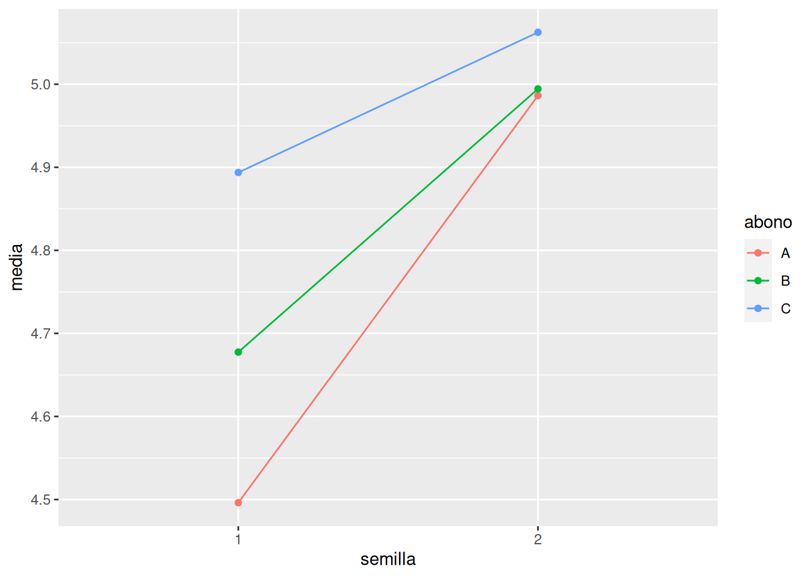

df <- data.frame(nitrogeno = c(19.8, 21.1, 28.2, 22.3, 22.5, 28.9, 23.8, 16.9, 31.6, 32.8, 41.1, 36.8, 37.0, 35.6, 32.2, 43.9, 37.5, 25.2, 37.2, 30.2, 26.6, 31.7, 26.8, 28.6, 29.2, 22.9, 38.0, 33.9, 26.2, 40.5),
lugar = rep(c("A", "B", "C"), c(8, 10, 12)))10 Análisis de la Varianza (ANOVA)
10.1 Ejercicios Resueltos
Para la realización de esta práctica se requieren los siguientes paquetes:
library(tidyverse)
# Incluye los siguientes paquetes:
# - dplyr: para el preprocesamiento y manipulación de datos.
library(broom) # para convertir las listas con los resúmenes de los modelos de regresión a formato organizado.
library(tidymodels) # para realizar contrastes de hipótesis en formato tidy.
library(pwr) # para el cálculo de tamaños muestrales.
library(knitr) # para el formateo de tablas.Ejercicio 10.1 Se quiere comparar la contaminación por dióxido de nitrógeno (NO2) en tres lugares distintos de una ciudad \(A\), \(B\) y \(C\) y para ello se han medido las concentraciones de NO2 en cada lugar en una muestra aleatoria de días, obteniendo los resultados de la siguiente tabla.
\[ \begin{array}{lrrrrrrrrrrrr} \hline A & 19.8 & 21.1 & 28.2 & 22.3 & 22.5 & 28.9 & 23.8 & 16.9 \\ B & 31.6 & 32.8 & 41.1 & 36.8 & 37.0 & 35.6 & 32.2 & 43.9 & 37.5 & 25.2 \\ C & 37.2 & 30.2 & 26.6 & 31.7 & 26.8 & 28.6 & 29.2 & 22.9 & 38.0 & 33.9 & 26.2 & 40.5 \\ \hline \end{array} \]
-
Crear un conjunto de datos con los datos de la muestra.
Solución -
Dibujar el diagrama de cajas con los puntos correspondientes a las mediciones de cada lugar y sus medias. A la vista del diagrama, ¿crees que existen diferencias significativas entre los niveles de NO2 de los tres lugares?
Soluciónlibrary(tidyverse) media <- mean(df$nitrogeno) df |> ggplot(aes(x = lugar, y = nitrogeno, fill = lugar)) + geom_boxplot(alpha = 0.5) + geom_point() + stat_summary(fun = mean, geom = "point", size = 3, color = "red") + geom_hline(yintercept = media, color = "red") + geom_text(aes(x = 0.7, y = media + 0.5, label = "Media global") )
Como se puede apreciar en el diagrama existen diferencias muy claras entre los niveles de NO2 de los tres lugares, especialmente entre \(B\) y \(A\).
-
Realizar un contraste ANOVA para ver si hay diferencias estadísticamente significativas entre las concentraciones medias de NO2 de los tres lugares.
AyudaPara realizar un contraste ANOVA podemos usar la función
aovdel paquetestats.Otra opción es utilizar la función para ajustar modelos de regresión lineales
lmy pasarle el modelo a la funciónanovadel paquetestats.Si queremos mostrar la salida del test en formato de tabla podemos utilizar la función
tidydel paquetebroom.SoluciónTenemos que realizar el contraste
\[\begin{align*} H_0 &: \mu_A = \mu_B = \mu_C \\ H_1 &: \mbox{Existen diferencias entre al menos dos medias} \end{align*}\]
Como el p-valor del contraste es \(0.00007\) que es mucho menor que el nivel de significación \(\alpha=0.05\), rechazamos la hipótesis nula y se concluye que existen diferencias estadísticamente significativas entre las concentraciones medias de NO2 de al menos dos lugares.
-
Realizar un contraste post-hoc de comparación de las medias de N02 por pares. ¿Entre qué lugares existe una diferencia estadísticamente significativa en la concentración media de NO2?
AyudaPara realizar un contraste post-hoc de comparación de medias por pares podemos usar la función
TukeyHSDdel paquetestats.Otra opción es utilizar la función
pairwise.t.testdel paquetestatsque aplica la corrección de Bonferroni a los p-valores.Soluciónpairwise.t.test(df$nitrogeno, df$lugar, p.adjust.method = "bonferroni") |> tidy() |> kable()group1 group2 p.value B A 0.0000531 C A 0.0049147 C B 0.1558055 Existe una diferencia muy significativa entre la concentración media de NO2 de los lugares \(A\) y \(B\) (p-valor \(0.00005\)), y también entre los lugares \(A\) y \(C\) (p-valor \(0.0049\)), pero no entre los lugares \(B\) y \(C\) (p-valor \(0.1558\)).
Ejercicio 10.2 El fichero trigo.csv contiene información sobre la cosecha de trigo (en toneladas) obtenida para dos tipos de semillas y tres tipos de abonos (\(A\), \(B\) y \(C\)).
-
Crear conjunto de datos con los datos de la muestra a partir del fichero
trigo.csv. -
Realizar un contraste ANOVA para ver si la cosecha de trigo depende del abono. ¿Cuál es la varianza residual del modelo?
SoluciónTenemos que realizar el contraste
\[\begin{align*} H_0 &: \mu_A = \mu_B = \mu_C \\ H_1 &: \mbox{Existen diferencias entre al menos dos medias} \end{align*}\]
Como el p-valor del contraste es \(0.0108\) que es menor que el nivel de significación \(\alpha=0.05\), rechazamos la hipótesis nula y se concluye que existen diferencias estadísticamente significativas entre las medias de las cosechas de trigo de los distintos abonos, y por tanto, la cosecha depende del tipo de abono.
La varianza residual del modelo es \(8.891\).
-
Realizar un contraste ANOVA para ver si la cosecha de trigo depende del abono y del tipo de semilla. ¿Cuánto se reduce la varianza residual al incluir el tipo de semilla en el modelo?
AyudaPara realizar un contraste ANOVA de dos factores sin interacción se puede utilizar tanto la función
aovcomo la funciónlmpero incluyendo la fórmula del modelovd ~ f1 + f2, dondevdes la variable dependiente,f1es el primer factor yf2el segundo.SoluciónTenemos que realizar el contraste ANOVA de dos factores sin interacción.
Como tanto el p-valor correspondiente a la semilla, que es prácticamente \(0\), como el correspondiente al abono, que es \(0.002\), son menores que el nivel de significación \(\alpha=0.05\), rechazamos la hipótesis nula y se concluye que la cosecha depende tanto del tipo de semilla como del tipo de abono.
Al incluir el tipo de semilla en el modelo, la varianza residual se reduce de \(8.8689\) a \(6.3528\), por lo que este modelo explica mejor la variabilidad de la cosecha.
-
Incluir en el modelo anterior también la interacción entre el tipo de semilla y el tipo de abono. ¿Es significativa la interacción entre los dos factores? ¿Cuánto se reduce la varianza residual al incluir la interacción en el modelo?
AyudaPara realizar un contraste ANOVA de dos factores con interacción se puede utilizar tanto la función
aovcomo la funciónlmpero incluyendo la fórmula del modelovd ~ f1 * f2, dondevdes la variable dependiente,f1es el primer factor yf2el segundo.SoluciónTenemos que realizar el contraste ANOVA de dos factores con interacción.
term df sumsq meansq statistic p.value semilla 1 2.5382510 2.5382510 38.464056 0.0000000 abono 2 0.9097896 0.4548948 6.893368 0.0016388 semilla:abono 2 0.4136396 0.2068198 3.134098 0.0483265 Residuals 90 5.9391188 0.0659902 NA NA term df sumsq meansq statistic p.value semilla 1 2.5382510 2.5382510 38.464056 0.0000000 abono 2 0.9097896 0.4548948 6.893368 0.0016388 semilla:abono 2 0.4136396 0.2068198 3.134098 0.0483265 Residuals 90 5.9391188 0.0659902 NA NA Al igual que antes, tanto el tipo de semilla como el tipo de abono son significativos en el modelo, pero además lo es su interacción ya que el p-valor correspondiente es \(0.0483\) que es menor que el nivel de significación \(\alpha = 0.05\).
Al incluir la interacción entre el tipo de semilla y el tipo de abono en el modelo, la varianza residual se reduce de \(6.3528\) a \(5.9391\), por lo que este modelo explica todavía mejor la variabilidad de la cosecha.
-
Realizar un diagrama de interacción entre los factores con las medias de los distintos grupos experimentales.
Solucióndf |> group_by(semilla, abono) |> summarise(media = mean(cosecha)) |> ggplot(aes(x = semilla, y = media, color = abono)) + geom_line(aes(group = abono)) + geom_point()`summarise()` has grouped output by 'semilla'. You can override using the `.groups` argument.
Como se aprecia en el diagrama, las líneas que unen las medias no son paralelas, lo que significa que hay interacción entre el tipo de semilla y el tipo de abono.
-
Realizar un contraste post-hoc para comparar las medias de los distintos grupos experimentales por pares. ¿Qué combinación de semilla y abono ofrece el mayor rendimiento de la cosecha?
SoluciónPrimero comparamos las medias de los grupos según el tipo de abono.
term contrast null.value estimate conf.low conf.high adj.p.value abono B-A 0 0.0946875 -0.0894244 0.2787994 0.4415513 abono C-A 0 0.2368750 0.0527631 0.4209869 0.0079604 abono C-B 0 0.1421875 -0.0419244 0.3262994 0.1625203 Se observa que solo hay una diferencia estadísticamente significativa entre las medias de las cosechas con los tipos de abono \(A\) y \(C\).
Ahora comparamos las medias de los grupos según el tipo de semilla.
term contrast null.value estimate conf.low conf.high adj.p.value abono B-A 0 0.0946875 -0.0894244 0.2787994 0.4415513 abono C-A 0 0.2368750 0.0527631 0.4209869 0.0079604 abono C-B 0 0.1421875 -0.0419244 0.3262994 0.1625203 Como solo hay dos grupos, solo hay una comparación posible, y se concluye hay diferencias significativas entre las medias de las cosechas con los tipos de semillas 1 y 2.
Finalmente, comparamos las medias de los grupos que surgen de la interacción del tipo de semilla con el tipo de abono.
term contrast null.value estimate conf.low conf.high adj.p.value semilla:abono 2:C-1:A 0 0.566250 0.3017713 0.8307287 0.0000002 semilla:abono 2:B-1:A 0 0.498125 0.2336463 0.7626037 0.0000055 semilla:abono 2:A-1:A 0 0.490000 0.2255213 0.7544787 0.0000080 semilla:abono 1:C-1:A 0 0.397500 0.1330213 0.6619787 0.0004539 semilla:abono 2:C-1:B 0 0.385000 0.1205213 0.6494787 0.0007519 semilla:abono 2:B-1:B 0 0.316875 0.0523963 0.5813537 0.0095145 semilla:abono 1:B-2:A 0 -0.308750 -0.5732287 -0.0442713 0.0125345 semilla:abono 1:C-1:B 0 0.216250 -0.0482287 0.4807287 0.1740364 semilla:abono 1:B-1:A 0 0.181250 -0.0832287 0.4457287 0.3529759 semilla:abono 2:C-1:C 0 0.168750 -0.0957287 0.4332287 0.4346043 semilla:abono 1:C-2:B 0 -0.100625 -0.3651037 0.1638537 0.8769068 semilla:abono 1:C-2:A 0 -0.092500 -0.3569787 0.1719787 0.9106159 semilla:abono 2:C-2:A 0 0.076250 -0.1882287 0.3407287 0.9592452 semilla:abono 2:C-2:B 0 0.068125 -0.1963537 0.3326037 0.9748943 semilla:abono 2:B-2:A 0 0.008125 -0.2563537 0.2726037 0.9999992 De más a menos significativas, se observa que hay diferencias estadísticamente significativas entre las medias de las cosechas de los grupos 2:C (semilla 2 y abono C) y 1:A (semilla 1 y abono A), entre los grupos 2:B y 1:A, entre los grupos 2:A y 1:A, entre los grupos 2:C y 1:B, entre los grupos 1:C y 1:A, entre los grupos 2:B y 1:B y ente los grupos 1:B y 2:A. Entre el resto de grupos no hay diferencias estadísticamente significativas.
A la vista del diagrama del apartado anterior, se observa que el mayor rendimiento se obtiene con el tipo de semilla 2 y el abono \(C\), seguido del tipo de semilla 2 y el abono \(B\), aunque la diferencia entre las medias de estos dos grupos no es significativa.
10.2 Ejercicios propuestos
Ejercicio 10.3 La tabla siguiente contiene las notas medias en la prueba de acceso a la universidad (EVAU) de una muestra de alumnos de los cinco institutos de una ciudad.
\[ \begin{array}{ccccc} \hline \mbox{Instituto 1} & \mbox{Instituto 2} & \mbox{Instituto 3} & \mbox{Instituto 4} & \mbox{Instituto 5} \\ 5.5 & 6.1 & 4.9 & 3.2 & 6.7 \\ 5.2 & 7.2 & 5.5 & 3.3 & 5.8 \\ 5.9 & 5.5 & 6.1 & 5.5 & 5.4 \\ 7.1 & 6.7 & 6.1 & 5.7 & 5.5 \\ 6.2 & 7.6 & 6.2 & 6.0 & 4.9 \\ 5.9 & 5.9 & 6.4 & 6.1 & 6.2 \\ 5.3 & 8.1 & 6.9 & 4.7 & 6.1 \\ 6.2 & 8.3 & 4.5 & 5.1 & 7.0 \\ \hline \end{array} \]
- Dibujar el diagrama de cajas y puntos de las notas de cada centro con sus respectivas medias. ¿Se observan diferencias entre los centros en el diagrama?